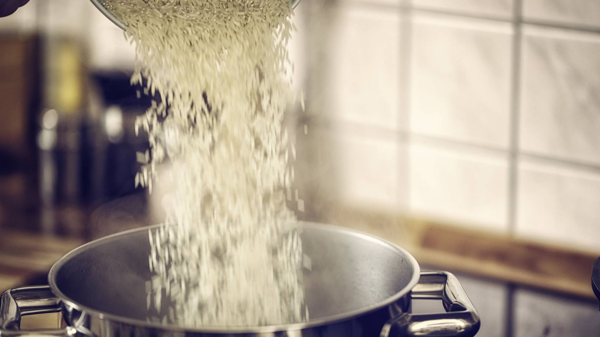
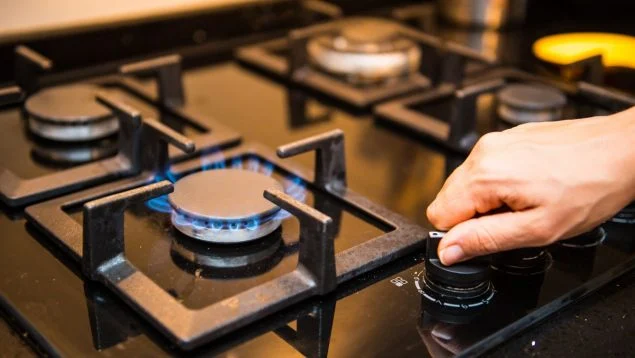
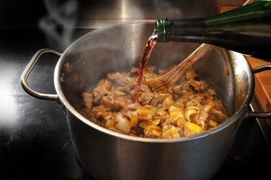
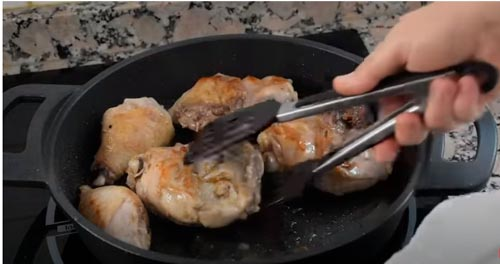
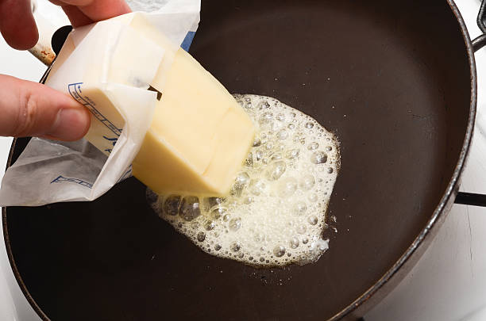
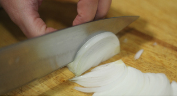
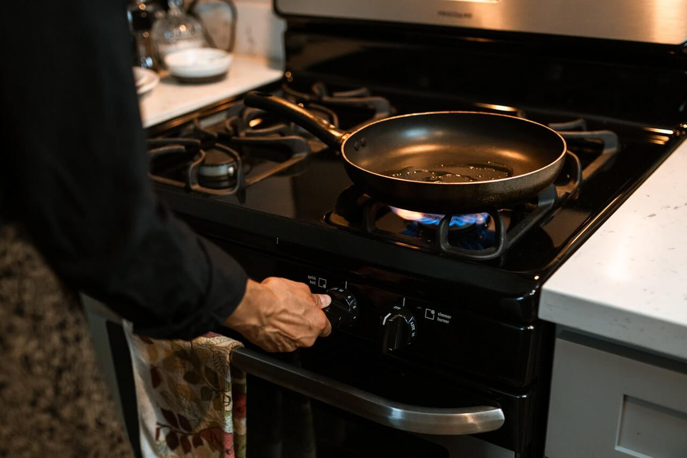
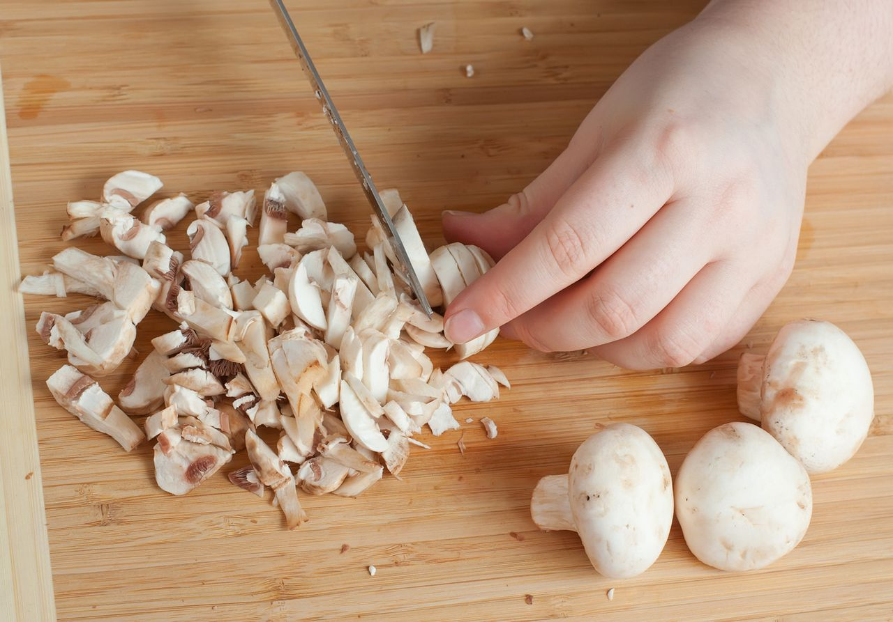

Plato 1
Indice
- Ingridientes
- Paso a paso
- Resultado final
-
1 taza de arroz blanco
-
2 pechugas de pollo en filetes
-
1 cebolla
-
150g de champiñones
-
50ml de vodka
-
2 tazas de agua o caldo de pollo (para el arroz)
-
sal al gusto
-
50g mantequilla
Paso 1: Cocinar el arroz
-
Para labar el arroz hay que echar 1 taza de arroz blanco a la olla con agua hirviendo y no sacaremos el arroz hasta que el agua no sea clara.

-
En una olla echaremos: 2 tazas de agua o caldo de pollo con sal al gusto personal. Cuando hierva el caldo o el agua vierte en la olla el arroz, baja la intensidad del fuego y tapa la olla durante 15-20 minutos. Hasta que el arrroz quede sueve.
-
Deberas apagar el fuego y dejarlo en reposo.

Paso 2: Cocinar pollo
-
Hecharemos las 2 pechugas de pollo a la sartén hasta que se empiezen a dorarse.

-
En la misma sarten con el pollo, hecharemos 50ml de vodka a la sartén y lo dejaremos hasta que se evapore el alcohol completamente, ya que asi dejaremos el pollo mas tierno.

-
Una vez evaporado el alcohol retiramos el pollo a una plato y lo taparemos con otro plato por encima.

Paso 3: Preparar salsa
-
Untaremos en una sarten limpia 50g de mantequilla, después picaremos 1 cebolla en corte fino y a continuacion la pondremos a fuego lento en la sarten untada de mantequilla.
 
-
Cortaremos de manera muy fina los 150g de champiñones y lo iremos añadiendo a la sarten con la cebolla hasta que los champiñones queden dorados.

-
Lo dejaremos en coccion durante 5 minutos.
Paso 4: Emplatar
-
Con un puchero o cuchara, echaremos la ración de arroz que queramos en un plato hondo.
-
Invertiremos la pechuga de pollo con unas pinzas de cocina, sobre el centro del plato.
-
Por ultimo echaremos la salsa con sus champiñones y cebolla, sobre el arroz y el pollo.
Este seria el resultado final.

Plato 1